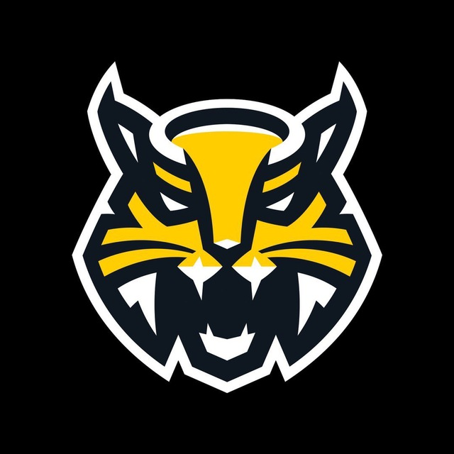

65 лет череповецкому хоккею
В октябре 1955 года на страницах череповецкой газеты «Ударная стройка» появились первые статьи о канадском хоккее. Зимой 1955 в городе появилась первая площадка для игры в хоккей, а 18 декабря состоялось официальное открытие катка и первый матч, в котором встретились сборная команда Череповца и вологодское «Торпедо». Таким образом, именно 18 декабря 1955 года по праву можно считать Днем рождения череповецкого хоккея.
Через несколько лет на смену “Строителю” пришёл “Металлург”, который остаётся с нами и по сей день. С сезона 1959/60 череповецкий «Металлург» стал играть в первенстве РСФСР. Под руководством Павла Викторовича Комарова были одержаны первые победы. 1 января 1967 года «Металлург» провел первый в своей истории международный матч. В Череповце со счетом 8:3 была обыграна команда «Локомотив»
В 1978 году руководство командой «Металлург» берёт на себя молодой тренер Владимир Голев. За несколько лет работы он выводит команду на новый уровень. В сезоне 1980/81 команда завоёвывает право играть в первой лиге союзного чемпионата.
В сезоне 1981/82 череповецкие хоккеисты дебютировали в 1-й лиге. «Металлург» занял пятое место. В дальнейшем череповчане выступали в первой лиге с переменным успехом. В 1987 году «Металлург» на некоторое время даже покинул состав участников лиги. На помощь был срочно вызван Владимир Голев, и под его руководством уже через два сезона череповчане снова вернулись в первую лигу. По итогам последнего сезона в первой лиге череповчане стали первыми в западной зоне и уже в следующем году их ждал дебют в «высшем хоккейном свете страны»
После распада Советского Союза была образована новая лига - МХЛ, в состав которой был принят и череповецкий «Металлург». Лучшим для череповчан сезоном в МХЛ стал последний в ее истории - четвертый. За время выступления в чемпионате МХЛ череповецкая команда поменяла свое название - с 1993 года она носит имя «Северсталь». В 1999 на пост тренера заходит Сергей Михалев.
В сезоне 2000/01 «Северсталь» впервые в своей истории добилась значительного достижения - выиграла бронзовые медали российской Суперлиги. Через два года, в сезоне 2002/03 «Северсталь» стала обладателем «серебра» российского чемпионата.
В 2008 году хоккейный клуб «Северсталь» стал одним из учредителей Континентальной Хоккейной лиги. С самого первого сезона ее существования - чемпионата 2008/09 череповецкий клуб является неизменным участником турнира. Наивысшего на сегодняшний день успеха команда добилась в сезоне 2012/13 гг.
В 2020 году ХК “Северсталь исполнилось 65 лет” В честь праздника был проведён товарищеский матч между командой "Северсталь" и сборной регионального ГУ МЧС. К слову, ведомство в том году отмечало 30-летний юбилей. И декабрьские игры "сталевары" посвятили именно сотрудникам МЧС.
Череповчане выйдут на лед в альтернативной форме "Вологжанка". Дизайн соответствует игровым майкам, в которым выступали спортсмены "Металлурга" в сезоне 1981/1982 годов. Название форма получила в честь доменной печи "Северстали". Она вторая по объему на предприятии.
Также хоккейная «Северсталь» представила болельщикам форму, посвященную 65-летнему юбилею клуба. Как уверяют разработчики, альтернативная форма «сочетает в себе современный, дерзкий дизайн, включает в себя множество мелких деталей и элементов». Правда, сами фанаты выразили некоторое недоумение заменой традиционных желто-черных цветов на синие, скорее напоминающие динамовские.